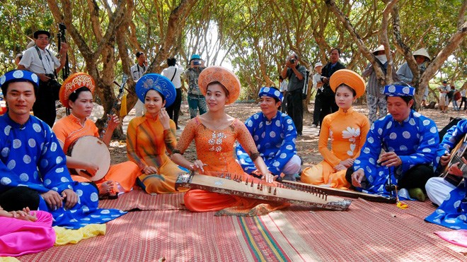
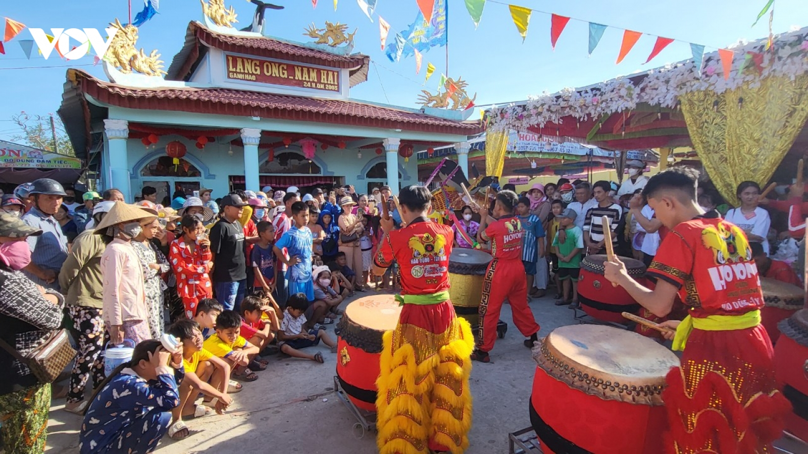

Đờn ca tài tử là "linh hồn" và là chiều sâu tâm hồn mộc mạc, phóng khoáng của người dân miền sông nước Nam Bộ, được UNESCO ghi danh là Di sản văn hóa phi vật thể đại diện của nhân loại vào năm 2013. Hình thành từ cuối thế kỷ 19, bộ môn nghệ thuật này là sự kết hợp tinh tế giữa Nhã nhạc cung đình Huế và các điệu hò, điệu lý dân dã phương Nam. Tên gọi "tài tử" thể hiện triết lý chơi nhạc để tri âm, tri kỷ và giải tỏa nhọc nhằn cuộc sống của những người có tài năng thiên bẩm chứ không coi đây là nghề kiếm sống.
Hồn cốt của dòng nhạc này nằm ở dàn nhạc cụ truyền thống như bộ "Ngũ tuyệt" (tranh, kìm, cò, bầu, tỳ bà) kết hợp cùng cây guitar phím lõm độc đáo. Toàn bộ giai điệu vận hành dựa trên 20 bài bản tổ với 4 hơi điệu chính: Bắc (trang trọng), Nam (trầm tĩnh), Hạ (tao nhã) và Oán (da diết). Không gò bó trên sân khấu lớn, tiếng đàn tiếng hát cất lên tự nhiên ở bất cứ đâu, từ mái đình, bến nước đến mương vườn thanh bình. Bạc Liêu tự hào là cái nôi di sản gắn liền với cố nhạc sĩ Cao Văn Lầu – tác giả bản "Dạ cổ hoài lang" bất hủ, đặt nền móng cho nền sân khấu Cải lương sau này.

Lễ hội Nghinh Ông Bạc Liêu (thường diễn ra vào giữa tháng 3 âm lịch tại thị trấn Gành Hào) là sự kiện văn hóa tâm linh lớn nhất của cộng đồng ngư dân miền duyên hải Nam Bộ. Gắn liền với tín ngưỡng thờ cá Ông (cá voi) – vị thần hộ mệnh linh thiêng luôn bảo vệ người đi biển vượt qua giông bão, lễ hội là dịp để người dân bày tỏ lòng biết ơn biển cả và cầu mong một năm mưa thuận gió hòa, những chuyến biển bội thu. Sự kiện diễn ra vô cùng náo nhiệt với phần lễ trang nghiêm bao gồm nghi thức rước thần Nam Hải trên sông ra biển cùng hàng trăm tàu thuyền trang hoàng cờ hoa rực rỡ, hòa cùng phần hội tưng bừng qua các trò chơi dân gian, đua thuyền và biểu diễn nghệ thuật truyền thống. Đây không chỉ là nét đẹp đời sống tinh thần đặc sắc mà còn là điểm nhấn du lịch văn hóa hấp dẫn, phản ánh trọn vẹn sự hào sảng và tình yêu biển sâu sắc của con người Bạc Liêu.
